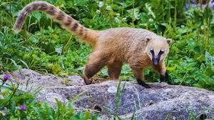
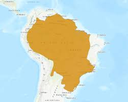

Quati
Nome científico: (Nasua nasua Linnaeus, 1758)
Nome comum: Quati.
Classificação biológica:
Domínio: Eukaryota.
Reino: Animalia.
Filo: Chordata.
Classe: Mammalia.
Ordem: Carnivora.
Família: Procyonidae.
Gênero: Nasua.
Espécie: Nasua nasua.
Nutrição: Onívoro.
Hábitos alimentares: Alimenta-se de frutas, insetos, pequenos vertebrados e ovos.
Morfologia do corpo: Corpo alongado, com focinho comprido e flexível, pelagem marrom-avermelhada e cauda longa e anelada. Mede entre 40 e 70 cm de comprimento, com cauda de 30 a 60 cm, e pesa entre 3 e 7 kg.
Comportamento: Animal sociável, vive em grupos de fêmeas e filhotes, enquanto os machos são solitários. É ágil, escalador e ativo durante o dia.
Principais Alimentos: Frutas, insetos, pequenos vertebrados e ovos.
Principais Predadores: Onças, jaguatiricas, cobras e aves de rapina.
Locais habitados
Distribuição:Vive nos biomas Mata Atlântica, Cerrado, Pantanal e Amazônia.
Habitat: Habita florestas tropicais, cerrados e áreas de mata próxima a rios.
Reprodução: A gestação dura cerca de 74 a 77 dias, resultando em ninhadas de 3 a 7 filhotes, que permanecem com a mãe até a maturidade.